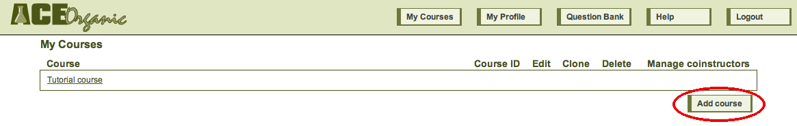
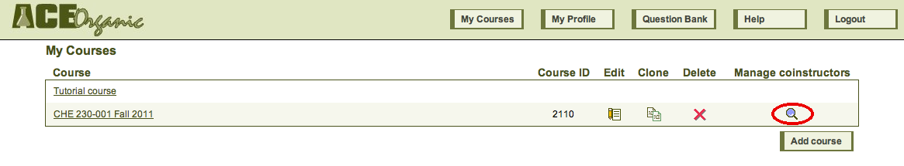
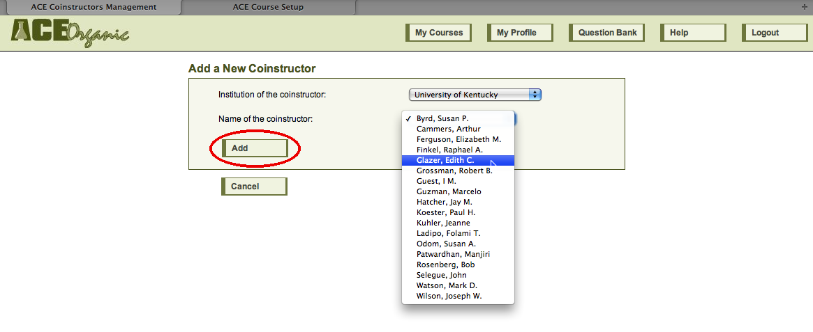
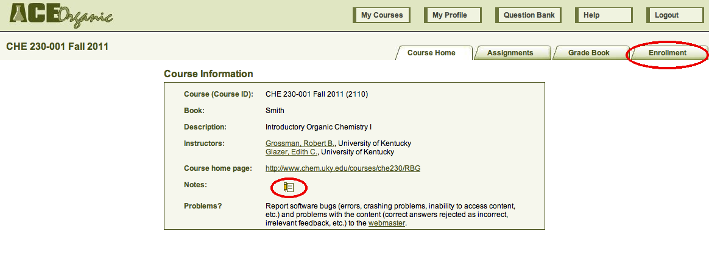
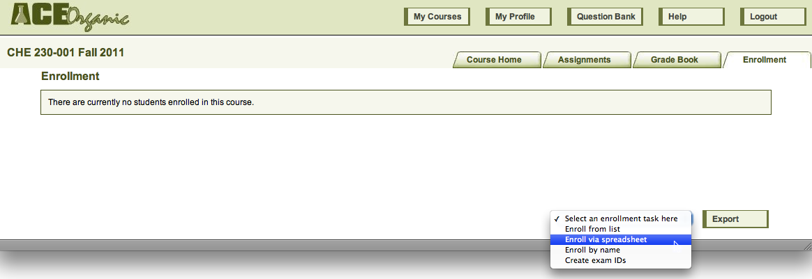
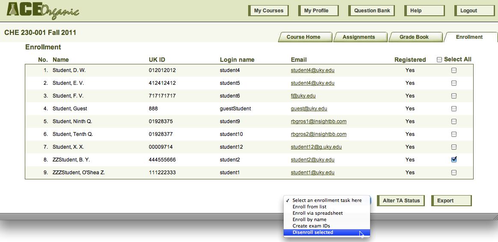

ACE has been designed to require as little time as possible for you to get started. You first need to register with ACE (as an instructor), and the ACE administrator needs to verify that you are indeed an instructor.
After the ACE administrator has verified your status, when you log in, you will see your user home page:

Note that ACE automatically makes the Tutorial course visible to you; you can enter it and work the tutorials, although you cannot change them.
To create a course of your own, press Add course. Enter the information.
When you have finished, press Add course. ACE will return you to the user home page, where your new course will now be listed.

If you wish, you can add coinstructors to your course. Coinstructors have all of the privileges of the owner of the course (yourself). Simply press the Manage coinstructors icon for your course, choose the institution and name of the instructor, and press Add.

From your user home page, click on the name of your course to enter it. You will arrive at the course home page. If you want to enter a message to your students, press the Edit icon next to "Notes." The course home page also has three tabs: Assignments, Grade Book, and Enrollment.

To enroll students in your course, press the Enrollment tab. ACE provides several ways to enroll students in your course. The easiest way is to upload a spreadsheet that contains your students' names and their ID numbers. You can also choose to enroll individual students, either by finding them in a list of students from your institution who have registered with ACE, or by entering their names and student ID numbers individually. After you enroll students in your course, they will be able to enter it and look at any assignments that you have created.

Whichever method you choose, after you have enrolled your students in the course, you will see a list of your students' names, ID numbers, ACE usernames, the email addresses that they entered when they enrolled, and whether they have enrolled with ACE. You can choose to promote one or more of the enrolled students to TA, and you can choose to disenroll any students who have dropped the course.

TAs can see the enrollment list, but they cannot take any actions on it. Ordinary students cannot see the enrollment list at all.